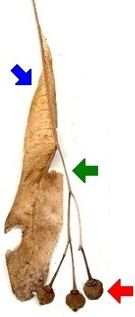

|
|  | Die Früchte werden ab September reif.
Es sind kleine, runde Nussfrüchte. Sie lassen sich mit den Fingern zerdrücken.
Der lang gestielte Fruchtstand besteht aus mehreren Früchten. Der Stiel ist mit einem flügelförmigen Tragblatt verwachsen.
Beim Herabfallen dreht sich der geflügelte Fruchtstand wie ein Propeller. Er wird leicht vom Wind davongetragen.
|